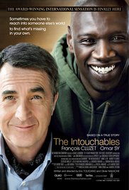

My Favourite Movies
1+1

After he becomes a quadriplegic from a paragliding accident, an aristocrat hires a young man from the projects to be his caregiver.
Directors: Olivier Nakache, Eric Toledano.
Writers: Olivier Nakache, Eric Toledano.
Stars: François Cluzet, Omar Sy, Anne Le Ny.
Genres: Biography, Comedy, Drama.
Release date: 26 April 2012 (Russia).
Go Home
The Great Gatsby

A writer and wall street trader, Nick, finds himself drawn to the past and lifestyle of his millionaire neighbor, Jay Gatsby.
Directors: Baz Luhrmann
Writers: Baz Luhrmann (screenplay), Craig Pearce (screenplay).
Stars: Leonardo DiCaprio, Carey Mulligan, Joel Edgertons.
Genres: Drama,Romance.
Release Date: 16 May 2013 (Russia).
Go Home
Joy
Joy is the story of the title character, who rose to become founder and matriarch of a powerful family business dynasty.
Director: David O. Russell.
Writers: David O. Russell (screenplay), Annie Mumolo (story).
Stars: Jennifer Lawrence, Robert De Niro, Bradley Cooper.
Genres: Drama.
Release Date: 21 January 2016 (Russia).
Go Home
Dallas Buyers Club

In 1985 Dallas, electrician and hustler Ron Woodroof works around the system to help AIDS patients get the medication they need after he is diagnosed with the disease.
Director: Jean-Marc Vallée.
Writers: Craig Borten, Melisa Wallack.
Stars: Matthew McConaughey, Jennifer Garner, Jared Leto.
Genres: Biography , Drama.
Release Date: 22 November 2013 (USA).
Go Home
Thank you for your attention.